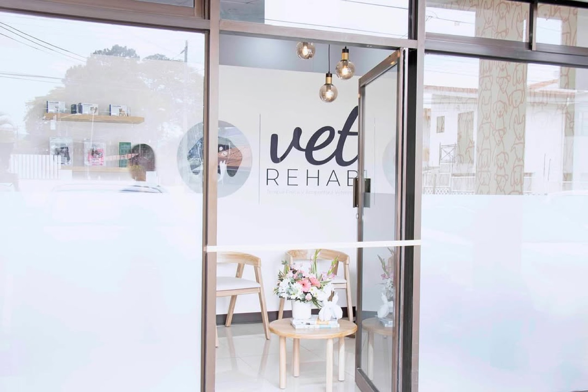
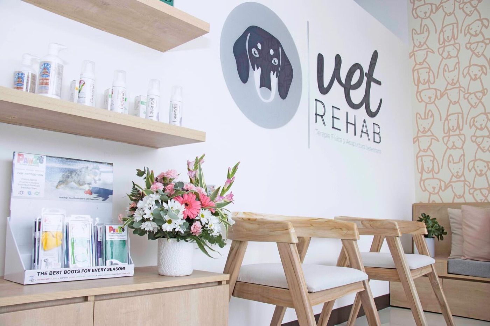

Sede San Francisco de Heredia
Terapia física, acupuntura y láser para perros y gatos, en Plaza Luvi, contiguo a Gattos Centro Veterinario. La sede acaba de cumplir su primer año. Atiende el mismo equipo de doctoras veterinarias que trabaja en Sabana.

Dirección
Plaza Luvi, San Francisco de Heredia.175 metros oeste y 100 metros sur del Centro Comercial Oxígeno, contiguo a Gattos Centro Veterinario.
Heredia, Costa Rica.
WhatsApp 8784-5220
Horario
- Lunes a viernes9:00 a 18:00
- Sábado8:00 a 13:00
- DomingoCerrado
La referencia más fácil es Gattos Centro Veterinario, en San Francisco de Heredia. Escribinos antes de salir y te mandamos la ubicación exacta.
01 El local
Compartimos edificio con Gattos
La sede de Heredia está en el mismo edificio que Gattos Centro Veterinario. Si tu mascota necesita medicina general y rehabilitación, podés resolver las dos cosas en la misma salida.
Las dos clínicas operan de forma independiente. Vet Rehab hace terapia física, acupuntura y manejo del dolor, y la medicina general de tu mascota sigue con su veterinario o veterinaria de cabecera, sea Gattos o cualquier otra clínica. Ese co-manejo aplica igual en las dos sedes.
02 Qué hay aquí
Tratamientos en Heredia
En Heredia hacemos todo lo de la clínica, menos la hidrocaminadora, que está en Sabana.
Terapia física
Terapia manual, ejercicio terapéutico, electroestimulación, magnetoterapia, ultrasonido y ozonoterapia.
Ver tratamientosAcupuntura y láser
Dolor crónico, pacientes con daño nervioso y perros mayores que necesitan bajar la carga de analgésicos.
Ver tratamientosTerapia a domicilio
Visitas en casa para los pacientes que no aguantan el traslado, dentro del Área Metropolitana.
Ver tratamientosSi tu perro necesita hidrocaminadora, coordinamos esas sesiones en Sabana y el resto del plan en la sede que te quede mejor.
03 Tu primera visita
Antes de la primera visita
- Traé: diagnóstico, radiografías y el reporte de la cirugía si la hubo, más la lista de los medicamentos que está tomando.
- Duración: la valoración de movilidad toma alrededor de una hora.
- Cómo traerlo: con collar o arnés cómodo y correa corta. Los gatos, en transportadora rígida tapada con una toalla.
- Al salir: te entregamos el plan de rehabilitación por escrito y los ejercicios para la casa.
